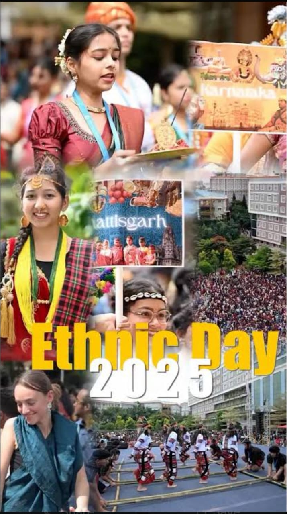
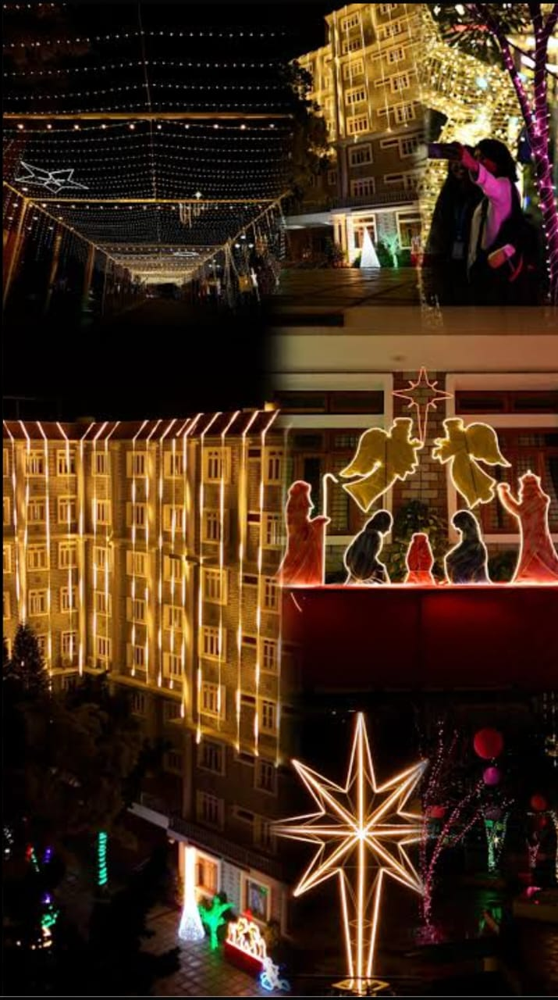
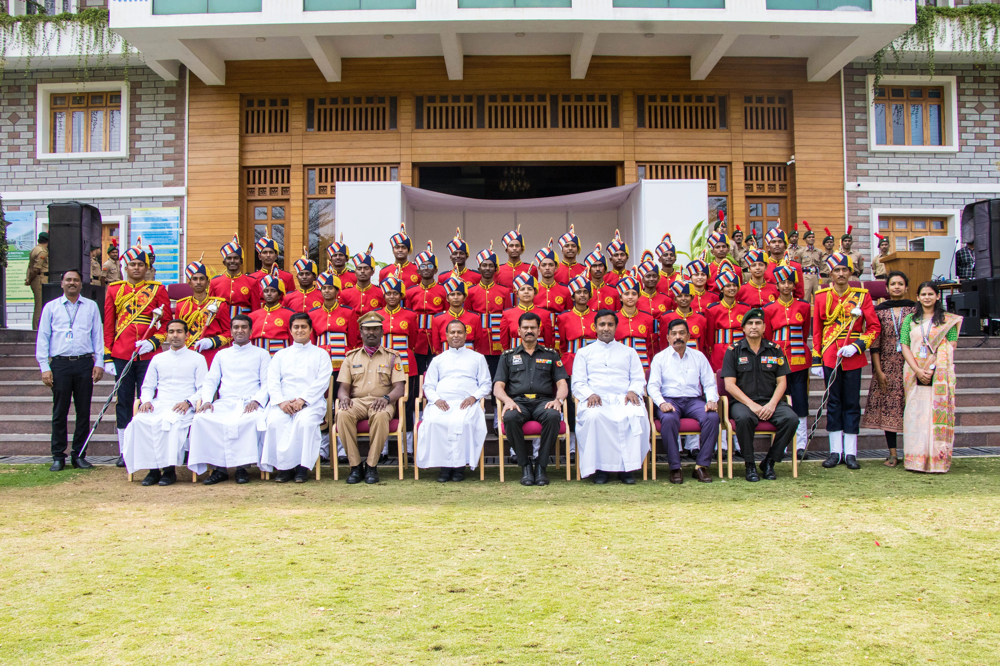
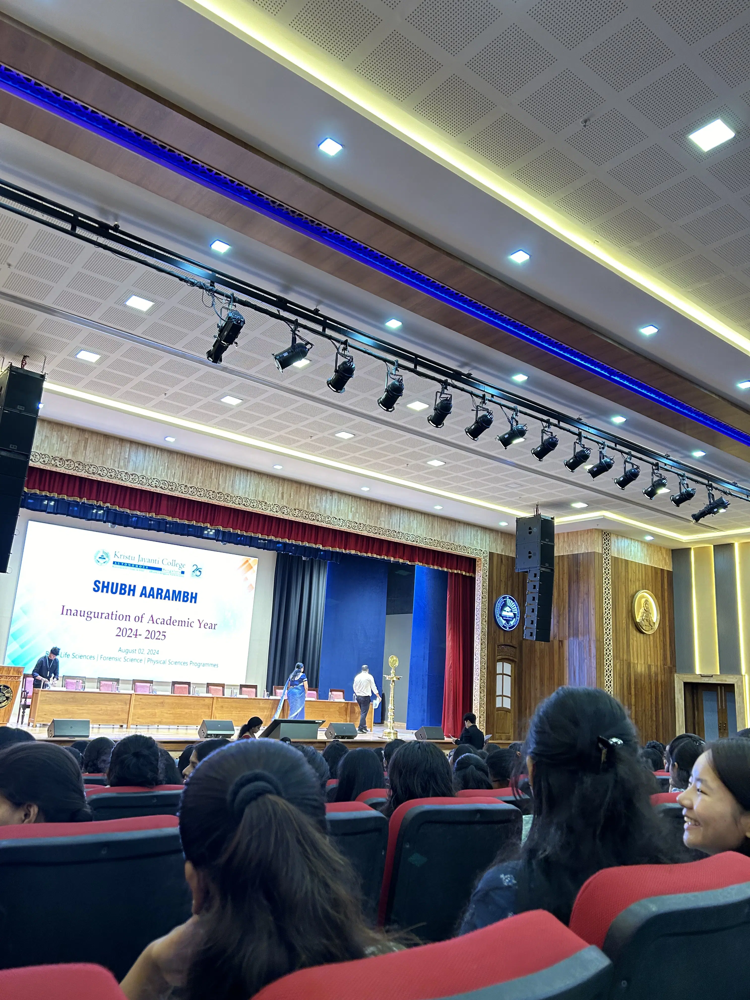
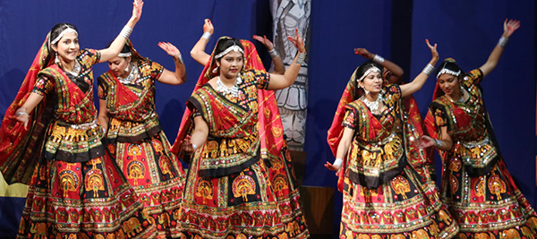

The Developer Identity
I am a **Systems-focused BCA Student** at Kristu Jayanti University. My work with the **Bit-Nexus Protocol** is a testament to my belief that technology should be both functional and expressive.
Cultural Intelligence: The KJU Experience
At Kristu Jayanti University, our education goes beyond the terminal. We believe in 'Light and Prosperity,' where every event is a patch to our personal operating system. Here is the documentation of my journey through the vibrant culture of KJU:

The Spectrum of Tradition: Ethnic Day
Ethnic Day at Kristu Jayanti is a breathtaking data-stream of colors and heritage. It is the one day where the entire campus transforms into a living map of India, as students from every state showcase their traditional attire, from the elegant silk sarees of the South to the vibrant turbans of the North.
Beyond the fashion, it represents our core value of 'Unity in Diversity.' Walking through the corridors, you hear a symphony of different languages and witness folk performances that have been passed down for generations, proving that even in a high-tech world, our cultural roots remain our strongest foundation.

A Season of Harmony: Christmas Celebrations
When December arrives, KJU pulses with a different kind of energy. The 'Woodstock' celebrations and the annual Carol competition bring a sense of universal brotherhood to the campus. The atmosphere is filled with the scent of festive treats and the sound of melodic harmonies that resonate through the quadrangle.
For us, Christmas isn't just a holiday; it's a reflection of the university's inclusive spirit. It is a time when students of all faiths come together to decorate the campus, share joy, and participate in the 'Season of Giving,' reminding us that compassion is the ultimate human protocol.

The Backbone of Discipline: National Cadet Corps (NCC)
The NCC unit at Kristu Jayanti University is synonymous with precision and "Unity and Discipline." Seeing the cadets in their crisp uniforms, marching in perfect synchronization, is a powerful reminder of the dedication required to serve the nation. It is a rigorous training ground that builds physical stamina and mental toughness.
Being part of or witnessing the NCC activities inspires a deep sense of patriotism and leadership. It teaches us that true success requires an organized structure and a commitment to duties that go far beyond self-interest—qualities that are essential for any aspiring professional in the BCA field.

The Divine Inauguration: Shubharambha 2025
Shubharambha marks the official 'System Boot' for the new academic year. This solemn inaugural ceremony is a beautiful KJU tradition where we seek divine blessings for our journey ahead. The lighting of the lamp symbolizes the dispelling of darkness and the beginning of a quest for true knowledge.
In 2025, this ceremony felt particularly significant as we stepped into deeper waters of our BCA degree. It serves as a spiritual anchor, reminding every Jayantian that while we chase technical skills and career goals, we must always keep our ethics and values at the center of our 'Source Code.'

The Rhythmic Pulse: Dance Culture
Dance at KJU is where creativity meets motion. From the inter-collegiate battlegrounds of 'Nrityanjali' to our internal departmental fests, the stage is always alive with the energy of our performers. Whether it is the rhythmic footwork of Bharatanatyam or the high-octane power of Hip-Hop, dance is how we express what words cannot.
Participating in these cultural fests helps us build confidence and teamwork. It’s a space where we break out of our digital shells and connect with our peers through art. These moments of performance are the highlights of campus life, proving that a balanced student life is the most efficient way to achieve greatness.